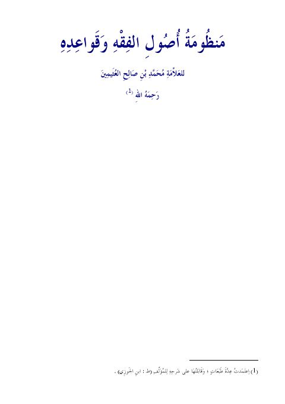

منظومة أصول الفقه وقواعده
Authors: محمد بن صالح العثيمين
Download Downloads need an internet connection.
- Edition
- 1
- Volumes
- 1
- Pages
- 9
- Type
- كتاب
- Category
- الفقه وأصوله
- Subcategory
- أصول الفقه
Description
**▫️ العنوان: منظومة أصول الفقه وقواعده** ▪️ المؤلف: #محمد_بن_صالح_العثيمين ▫️ الطبعة: 1 ▪️ عدد الأجزاء: 1 ▫️ الصفحات: 9 ▪️ نوع الوعاء: #كتاب ▫️ التصنيف الرئيسي: #الفقه_وأصوله ▪️ التصنيف الفرعي: #أصول_الفقه ۪